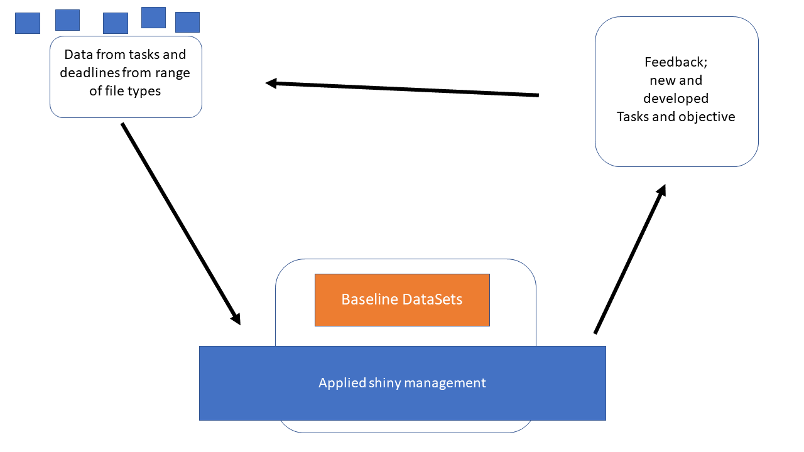
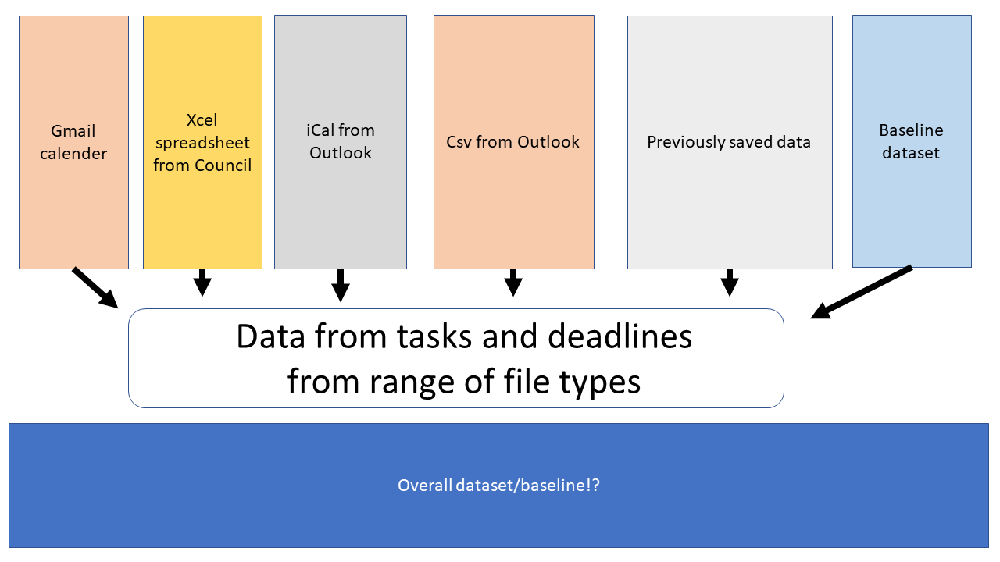

Chapter 1 Overview
The problem with much of my time management now that I am attempting to work with the skills obtained during my PhD is that I have so many different projects running at/in different levels of development and collaboration.
This is my first attempt to apply my
tidyPipesworkflow (Figure above) to my project management and integrate this into my normal workflow.
Generally, this work is focused on writing the scripts to automate the intergration between emails, PhD timeline and other projects. To do this we need to import datasets and modify the structure of these imputs to match the information needed to contruct a timeline of tasks and objectives.
1.1 Introduction
Navigating the path between graduate studies and an academic career is adiffucult task at the best of times. One of the key steps in becoming a setablish researcher in the current academic enviroment. To do this efficetifcely, time management is key, however when there are so many little projects running it can be hard to know what to work on.

This document is to record the method to proposing my 6month timeline for my PhD completion, as well as, showing the key aspects of the tidyPipes approach to research and the draft project plan for the inveribrate work I am proposing to do with Ben Kefford’s lab.
1.1.1 Data setup
Generally the concept is to create a baseline dataset of information and then extend this using dataspice to create a tidy format of data that can then be modelled and visualised using the tidyverse suite of tools.

1.1.2 Visualisation
Creating timeline charts in R (Generating Timeline charts)
We will use ggplot function from ggplot2 package to generate timeline charts. The following functions are used to add layers of details to the chart. Workout timeline with a heat-map of calories burnt with activity type
Timeline charts can be used in a lot of applications like tracking equipment or a process status changes, resource availability & scheduling, project timelines, documenting start and end times of events. The beauty of ggplot2 package is that the code can be easily customized, and more details can be added to the plots.
To do this I have created a calendar for each key project/impact/aspect of short-term timeline, objectives, as well as, my career and life projection. To begin with I need to create timelines and other project goals under covid19. I have put this into a single dataset called dat here.
1.1.3 Feedback loop
To create the feedback loop (to get information back from supervisors) I have began to develop a interactive shiny app within the same structure as the baseline dataset so that there is limited coding needed to create the tidypipes “cycle” of community engagement.

1.2 Methods
As computational work takes over our regular management of time over the tradional hard copy “diary”. I like this because important information can not be left in the “local cafe” however as I have used “gmail”, “outlook” and there suites of applications and tools for calenders I have muddled everything up and missed appointments etc.
To try and counter this I have developed a tidypipes workflow for my tasks, projects and other collarorations. See presentation here.
1.2.1 Data/information
Overall this is time series data. A good general tutorial for this sort of data is here on youtube. There are several ways to visualise this data, below are two selected bits of code that do this. Overall there are two generalised datasets that may be helpful to other individuals for each project or combination of projects (for the APR for example).
1.2.1.1 Plot 1
1.2.1.2 Plot 2
1.2.2 Baseline dataset
The data for this collection of tasks associated with timelines and targets. The baseline dataset is found in the .xlsx file named “baseline-dataset-calender.xlsx”. This is the base file I have been adding information to when I change the overall structure of the calendar projects.
1.2.2.1 .xlsx
These are excel workbooks. For now this is very simple and works with the current version of excel files (2020).
Each “sheet” of the excel file contains a single projects information. This is then converted to a csv file when needed. In the future each project will have its own file that can be added to or modified in a shiny interactive web app.
1.2.2.2 .csv
Generally the data can be imported as a csv, or other form.
## Parsed with column specification:
## cols(
## .default = col_character(),
## `Start Time` = col_time(format = ""),
## `End Time` = col_time(format = ""),
## `All day event` = col_logical(),
## `Reminder on/off` = col_logical(),
## `Reminder Time` = col_time(format = ""),
## `Billing Information` = col_logical(),
## Mileage = col_logical(),
## Private = col_logical(),
## `Show time as` = col_double()
## )## See spec(...) for full column specifications.1.2.2.3 .iCal
For calendars in Outlook the file type is iCal. There are packages that deal with these files in R. There is alot of my development work in this section because I need a way to document all the council emails and other work that I have undertaken as part of the COVID19 pandemic in Australia.
1.2.2.3.1 ical documentation [Robin Lovelace] calendar allows you to read-in ical files (which typically have the .ics filetype) with ic_read().
However, often it’s useful to create your own ical object from scratch. The purpose of this vignette is to show how, with reference to a real-world application: creating a timetable for a new module.
It assumes you’ve installed the package following instructions in the README and have attached it as follows:
## Warning: package 'calendar' was built under R version 4.0.21.2.2.3.1.1 Creating events
The building blocks of most calendars the event. All events have a start point and an end point (unless they are an all day event) and a summary description. As shown in the example below, they also tend to contain other fields.
## [1] "DTSTART:20180809T160000Z"
## [2] "DTEND:20180809T163000Z"
## [3] "DTSTAMP:20180810T094100Z"
## [4] "UID:1119ejg4vug5758527atjcrqj3@google.com"
## [5] "CREATED:20180807T133712Z"
## [6] "DESCRIPTION:\\n"
## [7] "LAST-MODIFIED:20180807T133712Z"
## [8] "LOCATION:"
## [9] "SEQUENCE:0"
## [10] "STATUS:CONFIRMED"
## [11] "SUMMARY:ical programming mission"
## [12] "TRANSP:OPAQUE"Fortunately you don’t need to specify all of these when creating events because some will be created manually and some are not necessary. Events can be created as follows (this one creates a 5 day trip):
## # A tibble: 1 x 4
## UID DTSTART DTEND SUMMARY
## <chr> <dttm> <dttm> <chr>
## 1 ical-f5b30619-4f9b-4e6d-b0~ 2019-01-12 00:00:00 2019-01-17 00:00:00 Research ~## [1] "ical" "tbl_df" "tbl" "data.frame"## [1] "BEGIN:VCALENDAR"
## [2] "PRODID:-//ATFutures/ical //EN"
## [3] "VERSION:2.0"
## [4] "CALSCALE:GREGORIAN"
## [5] "METHOD:PUBLISH"
## [6] "BEGIN:VEVENT"
## [7] "UID:ical-f5b30619-4f9b-4e6d-b078-726427f4918d"
## [8] "DTSTART:20190112T000000"
## [9] "DTEND:20190117T000000"
## [10] "SUMMARY:Research trip"
## [11] "END:VEVENT"
## [12] "END:VCALENDAR"1.2.3 Summarised actions
These sources of data are combined for my general timeline below.
1.3 Timeline
One of the tricky bits about timelines is the format of the date and time of each event. This is different for each event so therefore we have four columns to incorporate this information in the following from for this repository and database. This will also mean that some of the information in other formats will have to be converted into these dimension and any other elements defined in each dataset I am combining to make a overall timeline.
1.3.1 Overall timeline
By integrating these stage with some dataspice code/approach’s allows for me to generate metadata from each sheet of the excel file quickly using R. Here are the steps to do this.
## # A tibble: 22 x 9
## eventCode shortName month startDate finishDate description src ucX week
## <chr> <chr> <chr> <chr> <chr> <chr> <lgl> <lgl> <lgl>
## 1 scr202007~ WorldRef~ june 20/06/20~ 20/06/2020 World Refu~ NA NA NA
## 2 scr202007~ Oweek july <NA> <NA> O week for~ NA NA NA
## 3 scr202007~ ReasonSt~ augu~ <NA> <NA> Statement ~ NA NA NA
## 4 scr202007~ SSAFsurv~ augu~ <NA> <NA> SSAF Survey NA NA NA
## 5 scr202007~ TownHall2 augu~ <NA> <NA> Town HAll NA NA NA
## 6 scr202007~ openDay augu~ <NA> <NA> Open Day 2~ NA NA NA
## 7 scr202007~ nic21st augu~ <NA> <NA> Nicks 21st~ NA NA NA
## 8 scr202007~ SSAFbids sept~ <NA> <NA> SSAF Bids ~ NA NA NA
## 9 scr202007~ Grad sept~ <NA> <NA> Graduation NA NA NA
## 10 scr202007~ SSAFFunds sept~ <NA> <NA> SSAF Commi~ NA NA NA
## # ... with 12 more rows1.3.2 Figures
These can be generated using ggplot and other tidyverse approaches due to the implantation of the dataspice packages above.
1.4 Individual projects
Each of my tasks come from a collection of overall projects I collaborate on and develop code with on timeframes that range from monthly to undefined. The current projects I have integrated into my timeline are:
1.4.1 PhD
Over the duration of my PhD I have currently developed my thesis and publications to align with a 6 month hand-in date from the 1st July 2020.
1.4.1.1 Introduction
1.4.1.2 Methods
1.4.1.3 Conclusion
1.4.1.4 Discussion
1.4.2 Previous achievements and tasks
1.5 Council tasks
Being nominated to represent the Graduate community on the University of Canberra Council in November 2019 was a great honour. At the time I did understand the impact of
1.5.1 UC-Council
Generally it is regarded that there will be about a week (40hrs) of background reading and investigation before each council meeting. Under covid19 conditions I think this may be much greater.
Here are the general tasks and overall timetable of the Council obligations in 2020:
1.5.2 UC-SRC
This is a short demo site to help with planning for the SRC for semester 2 2020.
1.5.3 Supporting Reproducibility at UC
My Phd studies put me in a unique situation where I can apply the tools and computational development I have done with my PhD and conceptually test the framework for the application in the education sector.
UCdowncouncilCOMOSUCSRC covid support
1.6 UC-Invertebrates
This work has its own repository so far.
1.7 Additional tasks
During Covid19 I have undertaken other additional learning and development tasks to keep me informed for my positions on Council and for my PhD work.
1.7.1 Courses
| Course Name | Enrolment Date | Paid | Y/N | Grade Achieved |
|---|---|---|---|---|
| Using clinical health data for better healthcare | 2019-07-01 | N | 0.00 | |
| A Life of Happiness and Fulfillment | 2020-04-04 | N | 0.00 | |
| Science Matters: Let’s Talk About COVID-19 | 2020-04-03 | N | 0.00 | |
| Reproducible Research | 2020-04-21 | N | 0.00 | |
| Understanding Clinical Research: Behind the Statistics | 2020-04-04 | N | 0.00 | |
| The Science of Well-Being | 2020-04-21 | N | 0.00 | |
| Learning How to Learn: Powerful mental tools to help you master tough subjects | 2020-04-04 | N | 0.00 | |
| Mindshift: Break Through Obstacles to Learning and Discover Your | Hidden Potential | 2020-04-04 | N | 0.00 |
| Mountains 101 | 2020-04-04 | N | 0.00 | |
| Machine Learning | 2020-04-04 | N | 0.00 |